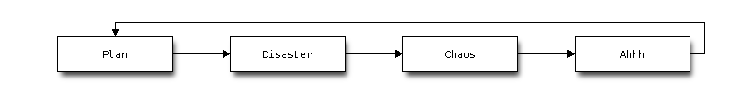

memo on bitbucket
I would like to have place where I can put some static content created by sphinx. I hereby demonstrate procedure to deploy html files onto bitbucket.
Create a repository under the name, <username>.bitbucket.org. This repository could either be public or private. And you can select mercurial or git as your tool. In this scenario, I use hg as my tool.
Create sphinx project to host your content.
$ mkdir wiki && cd wiki
$ sphinx-quickstart
Write up your content and build it as usual.
$ make html
Copy content from build/html directory.
$ mkdir publish
$ cd publish/
$ rsync -av ../build/html/ .
Now the content is ready for upload, so prepare for publication.
Install mercurial if you still do not have one at your hand.
$ sudo apt-get install python-dev
$ sudo pip install mercurial
$ which hg
/usr/local/bin/hg
OK, now we have hg.
Create .hgrc file under home directory.
[ui]
username = Fist LAST <your_mail_address>
verbose = True
Create ssh key for bitbucket.
$ ssh-keygen
~/.ssh$ ls id_rsa.bitbucket*
id_rsa.bitbucket id_rsa.bitbucket.pub
Configure ~/.ssh/config file so that newly created ssh key be referenced for bitbucket access.
And deploy your public key onto bitbucket.
$ xclip -sel clip < id_rsa.bitbucket.pub
And place another .hgrc file under .hg directory of publish directory so that push target shall be specified.
[paths]
default=ssh://hg@bitbucket.org/<userid>/<userid>.bitbucket.org
And push your content onto bitbucket.
$ rsync -av ../build/html .
$ hg add .
$ hg commit -m "my first post of mine"
$ hg push
Now you can access your content by http://<userid>.bitbucket.org.
chart in blog post
Same as sphinx, you can make use of blockdiag as extension in tinkerer. That is, you can draw chart in your blog by blockdiag.`
Here is a quick setup procedure.
First install sphinxcontrib-blockdiag package.
$ sudo pip install sphinxcontrib-blockdiag
Then add ‘sphinxcontrib.blockdiag’ in the list of extensions in conf.py.
extensions = ['tinkerer.ext.blog', 'tinkerer.ext.disqus', 'sphinxcontrib.blockdiag']
You can specify font of your choice used in blockdiag. Search for path of your font.
$ fc-list
And specify font paht as value of blockdiag_fontpath.
blockdiag_fontpath = '/usr/share/fonts/truetype/ttf-dejavu/DejaVuSansMono.ttf'
Now it’s ready for usage.
For example,

prevent broken pipe during ssh session
From time to time, you may encounter ssh session lost with following error.
Write failed: Broken pipe
It means that write() system call failed against File Descriptor for socket of ssh session.
$ man -s2 write
...
EPIPE fd is connected to a pipe or socket whose reading end is closed. When this happens the writing
process will also receive a SIGPIPE signal. (Thus, the write return value is seen only if the
program catches, blocks or ignores this signal.)
You may be able to avoid this connection lost by keeping connection alive.
client
You can configure ssh client to send request a response from sshd in the background. You can set interval with unit in second (~/.ssh/config).
With following configuration sample, requests are sent every 2 minutes.
ServerAliveInterval 120
For details, please refer to “man ssh_config”.
server
Same as client, sshd can be configured to send request on regular basis. sshd configuraiton file is /etc/ssh/sshd_config.
ClientAliveInterval 120
For details, please refer to “man sshd_config”.